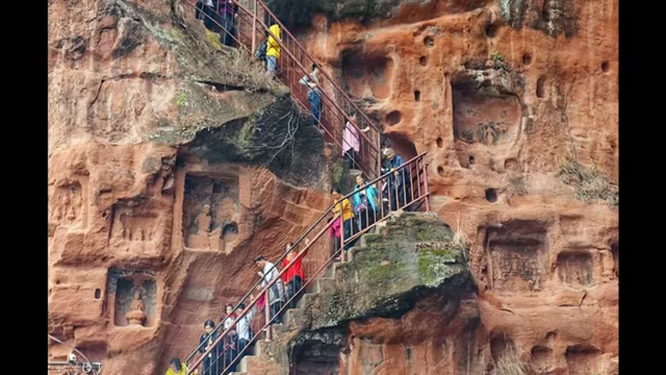

Curious Being
Was the Giant Buddha Repurposed From a Prehistoric Site?
Tina · 14 min · watch on YouTube · summarised 2026-09-27
The Leshan Giant Buddha sits in a 30 m niche on the shady side of Mount Lingyun in Sichuan, facing west across the meeting of three rivers. It is 71 m of red sandstone, depicting Maitreya, begun in 713 by a monk and finished in 803 — ninety years, worked from the head downwards, the spoil tipped into the river 00:00–02:28. It was built to calm the water, particularly the Dadu River, which wrecked boats.
For most of its life it was not exposed. A multi-storey wooden pavilion covered it, destroyed and rebuilt repeatedly, the last one lost in the Qing dynasty — which is what the beam holes and small niches in the side walls are for.

The statue sits in a deep niche in a river cliff, and the vegetation on it is what the argument turns on.
The observations, which are the good part
It is badly carved, and she is not the first to say so 02:29–04:44. Henri d'Ollone, visiting in 1914, described the statue as severely weathered and overgrown and not artistically pleasing — "an unfinished snowman" — while praising the smaller carvings on the rock walls nearby. Today, after repeated restoration, the face is flat and square with no brow bone and no eye sockets; the eyebrows, pupils and lips are painted on to be legible at all.
Two comparisons, both well chosen. Large Tang stone Buddhas generally survive in good condition without vegetation. Two of them stand about 66 miles away, cut from the same red sandstone, half Leshan's size and earlier — visibly better carved, barely weathered, and free of plants without maintenance. And on the cliff beside Leshan itself are two carved warriors in battle robes, more exposed to sun, wind and rain than the Buddha in its alcove, yet carrying no vegetation, with the southern one's face still recognisable 06:21–06:35.
Leshan, by contrast, needs continuous cleaning or the moss comes back.
It is not entirely stone 06:36–07:30. The ears and nose are wood, covered with clay and mortar. The ears are documented — a journal from the 1100s, written while the pavilion still stood, records them as wooden. The wooden nose was found comparatively recently. The small hair buns are plugged in and sealed with mortar, so they are not original either. Mortar is peeling at the toes, and the statue carries layers of it from many restorations.
Her question from all this is a fair one: the head was the first thing carved, so why start cutting corners at the very beginning of a ninety-year project?
Then the tool marks 08:34–10:08. Inside the Buddha park she finds layered diagonal marks — near the entrance, at a fountain, and on the zigzag staircase immediately north of the niche, which is said to have been cut at the same time as the Buddha. She reads them as the same size and style as Longyou, uniform and parallel, beyond hand tools.

The zigzag staircase beside the niche carries large uniform parallel marks she reads as machine-cut.
Her explanation
10:41–12:40 Mount Lingyun was worked by a lost civilisation with machinery, which left massive stone blocks attached to the mountain. Tang builders found them and saw a Buddha in one, which saved enormous labour but imposed limits: where the leftover block had too little material — the ears, parts of the face — features were built out in wood and mortar and added on. As those perished, what is left is the underlying block, which is why the face reads flat and blocky. The mortar skin also explains the vegetation, since mortar cracks, dirt lodges, and plants root.
Her supporting case is a Japanese quarry with similar marks where a block was repurposed as a Buddha in 1948, and the general point that reuse is normal — the Colosseum, Inca temples.
What you can check yourself
- The two warriors are metres from the Buddha, in the same rock, more exposed. Whether they carry vegetation and whether their faces survive is a photograph anyone can take. This is the best-controlled comparison in the video.
- The nearby earlier Buddhas in the same sandstone can be visited and compared.
- The wooden ears are in a written source from the 1100s, and the mortar layers, the peeling at the toes and the plugged hair buns are all visible.
- Henri d'Ollone's 1914 account is published and can be read against her summary of it.
- The early photographs exist and show how much vegetation the statue carried a century ago.
- The staircase marks are still there and can be measured — width, spacing, angle — which is what would move them from resemblance to comparison.
What the video does not settle
- Her own evidence explains the weathering without a prehistoric block. A statue repeatedly re-rendered in mortar is a mortar surface, not a stone one, and will fail and vegetate in exactly the way she describes. She establishes that Leshan is heavily mortared and that the bare-stone parts — neck, hands — stay clean. That is a complete account of the difference from the warriors on its own, and the video does not test it before adding the block.
- The pavilion cuts against the comparison. Leshan was sheltered for centuries and then abruptly exposed; the warriors never had a roof and have weathered continuously to equilibrium. Two surfaces with different exposure histories are not a controlled pair, and she notes the pavilion without applying it.
- Size is an uncontrolled variable. The comparison Buddhas are half Leshan's size. Drainage, surface area, water shed off an overhang and the practicalities of carving detail at 71 m all scale, and none is considered.
- The wood-and-mortar ears have an ordinary structural reading that is not raised: at this scale, projecting features carved in sandstone would be fragile under their own weight, and building them out in lighter material is a known practice. The video treats the choice as needing a supply-of-stone explanation without asking whether it needs an explanation at all.
- The Japanese example works against the argument it is offered for. A quarry block repurposed into a Buddha in 1948 shows that people with ordinary tools do exactly this. It supports reuse; it does not support machinery.
- The staircase dating is assumed in both directions. She doubts the claim that the stair is contemporary with the Buddha, then treats the marks on it as prehistoric. Mount Lingyun has been quarried, built on and re-cut for well over a thousand years, including for modern visitor access, and nothing dates the marks.
- Sandstone is given as Mohs 6 08:40–08:47, the same figure the entry on the Chinese caves video records as wrong — Mohs 6–7 is the hardness of quartz grains, not of a sandstone. In the Yangshan tool marks entry the same channel gives sandstone as 4–5 and calls it soft.
- The monk is not named. The tradition names him Haitong; the video says only "a monk".
- "Beyond the capacity of any hand tools" is asserted, with no measurement of any mark at any of the three locations. The frame shown over that line is dominated by the staircase, its modern handrail and a crowd of visitors; the marks are not resolvable in it.
- Only one of her comparison pairs is like for like. The Qishan Buddha panel is the good one — same red sandstone, and the difference in carving is plain. The others set Leshan against Longmen (limestone, Henan) and Yungang (Shanxi), both roughly 1,500 km away in different rock. The verbal claim is about a statue 66 miles off in the same stone; two of the three pictures are not that.
- The two warriors are never shown close enough to check. The frame that runs under the claim is a river-level view of the whole cliff in which the flanking recesses are visible but the figures in them cannot be made out. The comparison is the best-controlled thing in the video and it is asserted rather than shown.